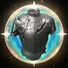
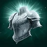
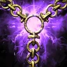

Прогресс прокачки
Отмечай шаги по ходу игры. Прогресс хранится в этом браузере, отдельно для каждого класса.
WIP PvE · Режим в работе
Этот режим собран по корейским билдам и нашему выбору, а не по проверенному глобальному билду. Считай его отправной точкой, пока глобальные игроки не выложат свои.
WIP PvP · Режим в работе
Этот режим собран по корейским билдам и нашему выбору, а не по проверенному глобальному билду. Считай его отправной точкой, пока глобальные игроки не выложат свои.
Обзор
Страж — главный танк AION 2, вокруг него строятся сложные рейды. Он держит агро, принимает танкбастеры и через  Ярость превращает каждый блок в бафф урона для всей группы. При этом урон у него приличный: в корейских группах одетый Страж делает около 20–23% урона группы.
Ярость превращает каждый блок в бафф урона для всей группы. При этом урон у него приличный: в корейских группах одетый Страж делает около 20–23% урона группы.
Билд в одном предложении
Удары щитом запускают  Суд: жмёшь
Суд: жмёшь  Удар щитом,
Удар щитом,  Кара хранителя и
Кара хранителя и  Щит погибели, чтобы Суд срабатывал постоянно, паузы заполняешь
Щит погибели, чтобы Суд срабатывал постоянно, паузы заполняешь  Жестокий удар +
Жестокий удар +  Град ударов, а сильные удары босса блокируешь, чтобы Ярость висела на группе.
Град ударов, а сильные удары босса блокируешь, чтобы Ярость висела на группе.
Глобальный 1 сезон: что меняется
Глобальные серверы открываются 5 октября 2026 (ранний доступ для Founder's Pack — с 30 сентября) и не связаны с корейскими и тайваньскими. Что это значит для Стража:
- 4 слота стигм вместо 6 — корейские танки носят пять-шесть, поэтому что-то придётся убрать (см. «Стигмы»).
- Стигмы качаются только до 20 — ступени 25 в глобальном клиенте нет.
- Нет героической экипировки в 1 сезоне: меньше доп. строк под Блок и пассивки.
- Бонусы Daevanion слабее: боссы живут дольше, поэтому держать Ярость и Боевое знамя ещё важнее.
- Экспедиции на 5 человек и святилища на 10: Ярость и групповая стойкость от Кары хранителя цепляют больше людей.
- PvP: все стартуют в одинаковой слабой экипировке, меты ещё нет.
Активные скиллы и пассивки в глобальной и корейско-тайваньской версиях совпадают. У стигм пропала только ступень 25.
Скиллы
Высоко качаются четыре скилла: Суд → Жестокий удар → Град ударов → Кровавая месть. Скиллы доходят до 10 за очки навыков, до 14 с Daevanion, до 16 с двумя кольцами и до 20 с арканами. Специализации открываются на 8, 12 и 16.
-
 Суд 20Основной урон. Его запускают Удар щитом, Кара хранителя, рывок щитом и Щит погибели; на 16 у него пропадает перезарядка, и за один запуск он бьёт два раза и больше.
Суд 20Основной урон. Его запускают Удар щитом, Кара хранителя, рывок щитом и Щит погибели; на 16 у него пропадает перезарядка, и за один запуск он бьёт два раза и больше.- 8Доп. урон при попадании
- 12Гарантир. крит. удар при попадании
- 16Удаление перезарядки [Суда]
Все специализации
- 8Поглощение 1% ОЗ
- 8Доп. урон при атаке цели под воздействием шок. эффектов
- 8Доп. урон при попадании
- 12Гарантир. крит. удар при попадании
- 16Удаление перезарядки [Суда]
-
 Жестокий удар 20Базовая атака, восстанавливает ману. Держи её зажатой вместе с макросом. На прокачке бери +20% восстановления маны вместо вампиризма.
Жестокий удар 20Базовая атака, восстанавливает ману. Держи её зажатой вместе с макросом. На прокачке бери +20% восстановления маны вместо вампиризма.- 8Поглощение 1% ОЗ
- 8Шанс мультиудара +50% при попадании
- 16Добавление 4-ой комбинации [Ожесточенный удар угрозы]
Все специализации
- 8Восстановление ОМ +20%
- 8Поглощение 1% ОЗ
- 8Шанс мультиудара +50% при попадании
- 12Перезарядка [Кары хранителя] -2s при попадании
- 16Добавление 4-ой комбинации [Ожесточенный удар угрозы]
-
 Град ударов 16 20Главный филлер и урон по оглушающей шкале. Специализация на 12 сокращает перезарядку Кровавой мести каждый раз, когда попадает Карающий удар.
Град ударов 16 20Главный филлер и урон по оглушающей шкале. Специализация на 12 сокращает перезарядку Кровавой мести каждый раз, когда попадает Карающий удар.- 8Поглощение 3% ОЗ от [Удар возмездия]
- 8Чем меньше целей попадания, тем больше увелич. урона (макс. до 12%)
- 12Перезарядка [Кары] -1s при попадании [Ударом укора]
Все специализации
- 8Затрата ОМ -20%
- 8Поглощение 3% ОЗ от [Удар возмездия]
- 8Чем меньше целей попадания, тем больше увелич. урона (макс. до 12%)
- 12Перезарядка [Кары] -1s при попадании [Ударом укора]
- 16[Удар возмездия] срабатывает еще раз
-
 Кровавая месть 16 20Заряди до 3-й стадии и отпусти: мощный удар плюс «Палач» (+20% урона в PvE на 20 сек.). Жми первым и по откату; на 16 всегда критует и игнорирует Блок.
Кровавая месть 16 20Заряди до 3-й стадии и отпусти: мощный удар плюс «Палач» (+20% урона в PvE на 20 сек.). Жми первым и по откату; на 16 всегда критует и игнорирует Блок.- 8СКР умений +30%
- 12Замена на умение с возможностью перемещения
- 16Крит. удар, несмотря на блок и уклонение
Все специализации
- 8Поглощение 10% ОЗ
- 8Нанесение постоянного урона цели при попадании
- 8СКР умений +30%
- 12Замена на умение с возможностью перемещения
- 16Крит. удар, несмотря на блок и уклонение
-
 Кара хранителя 16Запускает Суд, лечит и даёт «Защиту». Специализация на 16 даёт группе стойкость к урону — обязательно в группе, соло хватит 12.
Кара хранителя 16Запускает Суд, лечит и даёт «Защиту». Специализация на 16 даёт группе стойкость к урону — обязательно в группе, соло хватит 12.- 8Перезарядка -5 сек.
- 8Блок +100 во время Протекции
- 16Стойкость к урону в PvE участников группы +10%, стойкость к урону в PvP участников группы +5% при использовании умения
Все специализации
- 8Перезарядка -5 сек.
- 8Блок +100 во время Протекции
- 8Эффект продолжительного восстановления во время Протекции
- 12Чем больше целей попадания, тем больше увеличение эффекта стойкости к урону в PvE и стойкости к урону PvP от Протекции
- 16Стойкость к урону в PvE участников группы +10%, стойкость к урону в PvP участников группы +5% при использовании умения
-
 Удар щитом 12–16Запускает Суд и может вызвать Удар изнеможения. Пока не хватает маны, бери специализацию на ману.
Удар щитом 12–16Запускает Суд и может вызвать Удар изнеможения. Пока не хватает маны, бери специализацию на ману.- 8Шанс 50% активировать [Удар изнеможения] при попадании
- 12Перезарядка -2 сек.
Все специализации
- 8Длительность Оглушения +1 сек.
- 8Удаление затраты ОМ, восстановление 200 ОМ при попадании
- 8Шанс 50% активировать [Удар изнеможения] при попадании
- 12Перезарядка -2 сек.
- 16Оглушение по области
-
 Истребление 12Мощный скилл по оглушённым и сбитым с ног; +100% урона по боссам с иммунитетом к контролю. Щит погибели сбрасывает его перезарядку.
Истребление 12Мощный скилл по оглушённым и сбитым с ног; +100% урона по боссам с иммунитетом к контролю. Щит погибели сбрасывает его перезарядку.- 8+100% к урону по целям с иммунитетом к обездвиживанию
- 12Перезарядка -10 сек.
Все специализации
- 8Шанс мультиудара +50% при попадании
- 8Шанс сбить с ног +20%
- 8+100% к урону по целям с иммунитетом к обездвиживанию
- 12Перезарядка -10 сек.
- 16Смена на массовое умение
-
 Удар изнеможения 12Срабатывает после блока: −25% Защиты цели. Жми, как только загорится.
Удар изнеможения 12Срабатывает после блока: −25% Защиты цели. Жми, как только загорится.- 8Длительность Изнеможения +3 сек.
- 12Игнорирование блока и УКЛ, попадание мультиударом
Все специализации
- 8Шанс 30% оглушить на 3s
- 8Длительность Изнеможения +3 сек.
- 8Получ. исцеление -60% при истощении
- 12Игнорирование блока и УКЛ, попадание мультиударом
- 16Шанс 25% сбросить время перезарядки при успешном блоке
-
 Ловушка 12Притягивание. Против боссов первая специализация делает из него сближение.
Ловушка 12Притягивание. Против боссов первая специализация делает из него сближение.- 8Перемещение к цели при наличии у нее иммунитета к обездвиживанию
- 8Завершение перезарядки при уничтожении врага
Все специализации
- 8Перемещение к цели при наличии у нее иммунитета к обездвиживанию
- 8-20% к сопротивлению негат. эффектам на 5s при попадании
- 8Завершение перезарядки при уничтожении врага
- 12Создание защитной оболочки, равной 10% от макс. ОЗ
- 1650% шанс наложить Оглушение на 3s
-
 Удар щитом (рывок) 12Уклонение → рывок обратно к цели; тоже запускает Суд.
Удар щитом (рывок) 12Уклонение → рывок обратно к цели; тоже запускает Суд.- 8Дальность атаки +10 м
- 12Перезарядка -10 сек.
Все специализации
- 8Восстанавливает 300 ОД при попадании
- 8Дальность атаки +10 м
- 8Умение становится заряжаемым и наносит урон по области
- 12Перезарядка -10 сек.
- 16Шанс Оглушения +25%
-
 Сияющий клинок остаткиБьёт только цели под Оглушающей шкалой — слишком редко, чтобы вкладываться.
Сияющий клинок остаткиБьёт только цели под Оглушающей шкалой — слишком редко, чтобы вкладываться.Все специализации
- 8Поглощение 5% ОЗ
- 8Восстановление 120 ОМ при попадании
- 8Замена на умение с возможностью перемещения
- 12Гарантир. мультиудар при попадании
- 16Перезарядка всех умений -1s при попадании
Пассивки
| # | Пассивка | Зачем |
|---|---|---|
| 1 | +урон в PvE тебе и группе на 20 сек. после каждого блока. Причина, по которой группы ищут Стража. | |
| 2 | Двойная ненависть и бафф Атаки при ударах спереди — агро и урон сразу. | |
| 3 | Шанс крита и 50%-й шанс доп. урона с каждого удара. | |
| 4 | Защита, стойкость, макс. ОЗ и входящее лечение — можно качать с самого начала. | |
| 5 |  Избавление | Стойкость на первый удар раз в 20 сек., чтобы тебя не снесли с открытия. |
Печать защиты работает и на низком уровне; Попадание шоком и  Инстинкт выживания — пассивки для PvP.
Инстинкт выживания — пассивки для PvP.
Экипировка и статы
- Блок — каждый блок это Ярость для группы и срабатывание Удара изнеможения. Не меняй его на чистый урон.
- Точность — промах скиллом это потерянное агро. Держи её высокой наравне с защитными статами.
- % Атаки, усиление урона, крит. урон на остальных строках: корейские билды ставят % Атаки на наплечники и плащ, усиление урона на нагрудник, скорость боя на перчатки.
- ОЗ и Защита на глобальных серверах в начале важнее: у хилера экипировка тоже слабая.
Арканы: сначала Суд до 20, потом Жестокий удар, затем Град ударов и Кровавая месть. На уникальных картах ищи усиление урона, усиление крит. урона, урон оружием и Атаку.
Доски Daevanion
Daevanion поднимает скиллы с 10 до 14 и даёт кучу статов. Каждый синий узел — +1 уровень своему скиллу.
| Доска | Открытие | Что даёт |
|---|---|---|
| Nezekan | Ур. 12 | Уровни скиллов, базовые статы |
| Zikel | Ур. 20 | Уклонение, усиление / стойкость к урону |
| Vaizel | Ур. 30 | Критический урон |
| Triniel | Ур. 40 | Мультиудар (в основном PvP) |
| Ariel | Ур. 45 | Урон и сопротивления в PvE |
| Azphel | Ур. 45 | Урон и сопротивления в PvP |
- Приоритет: синие узлы Суд, Жестокий удар, Град ударов, Кровавая месть, затем оранжевые, затем статы.
- Приоритет: синие узлы Суд, Ловушка, Удар щитом (рывок),
 Снятие шока, затем оранжевые.
Снятие шока, затем оранжевые. - Ariel, а не Azphel — цена одинаковая, а ошибка тут самая дорогая в системе.
- Azphel, а не Ariel, и Triniel раньше.
- В начале на каждой доске бери сторону усиления урона, а не стойкости — защиту позже закроет экипировка.
Раскладка досок взята из корейско-тайваньского клиента, в глобальной версии значения ниже. Проверь доску в игре, прежде чем вкладываться по всему маршруту.
Стигмы
Корейские танки носят Провокацию, Щит спасения, Щит погибели, Боевое знамя, Кару Владыки Эмпирея и Благородную кольчугу. В глобальной версии слотов четыре, поэтому набор ниже оставляет агро, блок против танкбастера, запуск Суда и бафф урона.
-
 Щит погибели Ур. 20Сближение, которое запускает Суд и на 5 сбрасывает Истребление. Эту стигму оставляет любой билд Стража.
Щит погибели Ур. 20Сближение, которое запускает Суд и на 5 сбрасывает Истребление. Эту стигму оставляет любой билд Стража.- 5Завершение перезарядки [Истребления] при попадании
- 10Блок +200 на 5s при попадании
- 15Завершение перезарядки при уничтожении врага
- 20Шанс сбить с ног +25%
Все специализации
- 5Завершение перезарядки [Истребления] при попадании
- 10Блок +200 на 5s при попадании
- 15Завершение перезарядки при уничтожении врага
- 20Шанс сбить с ног +25%
-
 Боевое знамя Ур. 20Атака от твоей Защиты. На 20 перезарядка короче на 30 сек. — самая сильная стигма на урон.
Боевое знамя Ур. 20Атака от твоей Защиты. На 20 перезарядка короче на 30 сек. — самая сильная стигма на урон.- 5+10% к шансу мультиудара во время действия
- 10+10% к усилению урона от оружия во время действия
- 15Эффект увеличения АТК пропорционально ЗЩТ +20%
- 20Перезарядка -30 сек.
Все специализации
- 5+10% к шансу мультиудара во время действия
- 10+10% к усилению урона от оружия во время действия
- 15Эффект увеличения АТК пропорционально ЗЩТ +20%
- 20Перезарядка -30 сек.
-
 Провокация Ур. 15Агро плюс «Уменьшение» (−10% Атаки босса). На 15 короче перезарядка.
Провокация Ур. 15Агро плюс «Уменьшение» (−10% Атаки босса). На 15 короче перезарядка.- 5Снижение стойкости к урону в PvE на 10% и PvP на 5% при Смятении
- 10Доп. сниж. АТК на 10% при смятении
- 15Перезарядка -5 сек.
Все специализации
- 5Снижение стойкости к урону в PvE на 10% и PvP на 5% при Смятении
- 10Доп. сниж. АТК на 10% при смятении
- 15Перезарядка -5 сек.
- 20Длительность Провокации +2 сек., длительность Смятении +5 сек.
-
Щит спасения Ур. 15Гарантированный блок на 3 сек. — жми прямо перед танкбастером. Каждый блок заодно обновляет Ярость.
- 5Непрерывное использование +1 раз
- 10Замена на умение с возможностью перемещения
- 15СКР движ. +5% на 3s при успешном блоке
Все специализации
- 5Непрерывное использование +1 раз
- 10Замена на умение с возможностью перемещения
- 15СКР движ. +5% на 3s при успешном блоке
- 20Восст. 10% ОЗ 1 раз при успешном блоке щитом
-
 Кара Владыки Эмпирея солоДальнобойное АоЕ с большим уроном по оглушающей шкале. Ставь для фарма в открытом мире и соло-контента.
Кара Владыки Эмпирея солоДальнобойное АоЕ с большим уроном по оглушающей шкале. Ставь для фарма в открытом мире и соло-контента.- 5Чем меньше целей попадания, тем больше увелич. урона (макс. до 20%)
- 10Урон по шкале Ошеломления +50
Все специализации
- 5Чем меньше целей попадания, тем больше увелич. урона (макс. до 20%)
- 10Урон по шкале Ошеломления +50
- 15Увеличение урона в PvE +10%, увеличение урона в PvP +5% на 10s при попадании
- 20Шанс Оглушения +25%
-

Благородная кольчуга альт.Бафф на 300 сек.; на 10 и 15 усиливает Неповиновение и Ярость. Хорош, когда агро уже держится уверенно.- 5+5% к ЗЩТ во время действия
- 10Эффект [Неповиновение] x1,5 во время действия
- 15Эффект [Ярости] x1,5 во время действия
Все специализации
- 5+5% к ЗЩТ во время действия
- 10Эффект [Неповиновение] x1,5 во время действия
- 15Эффект [Ярости] x1,5 во время действия
- 20+10% к получ. исцелению во время действия
-
 Щит Неджакана рейдыЩит группе на один общий удар. Ставь только под бой, где он нужен.
Щит Неджакана рейдыЩит группе на один общий удар. Ставь только под бой, где он нужен.- 5Стойкость ко всем стихиям +20% во время действия защитной оболочки
- 10Длительность защитной оболочки +2 сек.
Все специализации
- 5Стойкость ко всем стихиям +20% во время действия защитной оболочки
- 10Длительность защитной оболочки +2 сек.
- 15Стойкость к урону в PvE +20%, стойкость к урону в PvP +10% во время действия защитной оболочки
- 20Восстановление 20% от макс. ОЗ при снятии защитной оболочки
Макрос и ротация
В AION 2 два разных инструмента, и билд использует оба:
- Линия на кнопке — несколько скиллов на одной кнопке панели. Нажатие применяет готовый скилл с наивысшим приоритетом, а в AION 2 наивысший приоритет у нижнего слота. Карточки ниже показывают линии сверху вниз, как в игре, с номером приоритета у каждого скилла.
- Встроенный макрос — пока ты держишь его клавишу, он по очереди нажимает линии панели и отменяет хвосты анимаций. Скиллы на перезарядке пропускаются. Базовую атаку (ЛКМ) держи вместе с клавишей макроса, а не ставь в сам макрос — так игра лучше вплетает и отменяет её.
Урон Стража — это цикл: удар щитом → Суд → срабатывания → филлер. Линии ниже устроены так, чтобы Суд и срабатывания всегда шли первыми, как только загорятся.
1. Линии на кнопках
-
5
Град ударов
-
4
Щит погибели
-
3
Удар изнеможения
-
2
Истребление
-
1
Суд
Порядок как в игре, сверху вниз. 1 = высший приоритет — нижний слот.
Суд, Истребление и Удар изнеможения доступны только после своего триггера, поэтому в остальное время линия проваливается до Града ударов.
-
2
Кара хранителя
-
1
Удар щитом
Порядок как в игре, сверху вниз. 1 = высший приоритет — нижний слот.
Оба запускают Суд — вместе со Щитом погибели держат его в работе.
- 2 Благородная кольчуга
-
1
Боевое знамя
Порядок как в игре, сверху вниз. 1 = высший приоритет — нижний слот.
Знамя по откату; добавь Благородную кольчугу, если она стоит в стигмах.
2. Встроенный макрос
Окно скиллов → Макрос. Поставь три линии в этом порядке и везде Delay 10 мс. Клавиша: Настройки → Управление → Общее → Игровой процесс → Макрос (лучше боковая кнопка мыши).
- 1Линия срабатыванийПКМ · 10 мс
- 2Линия триггеровE · 10 мс
- 3Линия баффовR · 10 мс
Совет для 1 сезона (Grobs): на старте перезарядки долгие, и баффы ценнее вовремя — линию баффов можно убрать из макроса и жать самому прямо перед боссом или большой пачкой.
3. Что нажимать на самом деле
- ДержатьЖестокий удар на ЛКМ и Макрос — Жестокий удар восполняет ману между скиллами.
- ЗарядитьКровавая месть до 3-й стадии вручную в начале каждого окна — заряжаемые скиллы в макросе срабатывают на случайной стадии.
- ВручнуюПровокация и Ловушка (агро и притягивание), Щит спасения перед танкбастером, Удар щитом (рывок) после уклонения.
Танковать — не работа макроса
Разверни босса от группы, блокируй телеграфированные удары (каждый блок — Ярость для всех) и держи «Уменьшение» от Провокации на цели. Макрос только держит плотным твой цикл урона, пока ты этим занят.
Линии повторяют корейские сетапы Стража (Суд / Знамя / Щит погибели / Град ударов на одной клавише, Жестокий удар зажат на ЛКМ), адаптированные под четыре стигмы глобальной версии. Проверь их на манекене, когда откроется глобальный клиент.
Итог
- Скиллы: Суд 20, Жестокий удар 20, Град ударов и Кровавая месть 16→20, Кара хранителя 16; остальное 12.
- Стигмы: Щит погибели 20, Боевое знамя 20, Провокация 15, Щит спасения 15.
- Пассивки: Ярость > Неповиновение > Кара небес > Несокрушимая защита / Закаление.
- Игра: удар щитом → Суд, заряженная Кровавая месть по откату, блокируй сильные удары.
Обзор
В PvP Страж — защитник и разрушитель строя. Он вытаскивает цели из позиции, оглушает и сбивает с ног, режет им лечение и выживает в толпе, пока никто не зайдёт ему за спину.
Приоритеты по порядку: контроль → выживание → урон по тому, кого ты только что заблокировал.
Глобальной PvP-меты ещё нет. Этот режим совмещает корейские PvP-билды с данными скиллов из глобального клиента — это отправная точка.
Скиллы
-
Ловушка 16Притягивание + обездвиживание, а на 16 ещё 50% шанс оглушить. Корейские PvP-гайды называют 16 обязательным.
- 8-20% к сопротивлению негат. эффектам на 5s при попадании
- 12Создание защитной оболочки, равной 10% от макс. ОЗ
- 1650% шанс наложить Оглушение на 3s
Все специализации
- 8Перемещение к цели при наличии у нее иммунитета к обездвиживанию
- 8-20% к сопротивлению негат. эффектам на 5s при попадании
- 8Завершение перезарядки при уничтожении врага
- 12Создание защитной оболочки, равной 10% от макс. ОЗ
- 1650% шанс наложить Оглушение на 3s
-
Удар щитом (рывок) 20Уклонение → рывок с шансом оглушения, заодно запускает Суд. Считается почти обязательным на 20.
- 8Дальность атаки +10 м
- 12Перезарядка -10 сек.
- 16Шанс Оглушения +25%
Все специализации
- 8Восстанавливает 300 ОД при попадании
- 8Дальность атаки +10 м
- 8Умение становится заряжаемым и наносит урон по области
- 12Перезарядка -10 сек.
- 16Шанс Оглушения +25%
-
Суд 20По-прежнему твой урон — доп. урон по оглушённым и сбитым с ног игрокам.
- 8Доп. урон при атаке цели под воздействием шок. эффектов
- 12Гарантир. крит. удар при попадании
- 16Удаление перезарядки [Суда]
Все специализации
- 8Поглощение 1% ОЗ
- 8Доп. урон при атаке цели под воздействием шок. эффектов
- 8Доп. урон при попадании
- 12Гарантир. крит. удар при попадании
- 16Удаление перезарядки [Суда]
-
Кровавая месть 16Удар, игнорирующий Блок и Уклонение; бери специализацию на применение в движении, чтобы заряжать в погоне.
- 8СКР умений +30%
- 12Замена на умение с возможностью перемещения
- 16Крит. удар, несмотря на блок и уклонение
Все специализации
- 8Поглощение 10% ОЗ
- 8Нанесение постоянного урона цели при попадании
- 8СКР умений +30%
- 12Замена на умение с возможностью перемещения
- 16Крит. удар, несмотря на блок и уклонение
-
Удар изнеможения 12−60% входящего лечения цели — твой антихил.
- 8Получ. исцеление -60% при истощении
- 12Игнорирование блока и УКЛ, попадание мультиударом
Все специализации
- 8Шанс 30% оглушить на 3s
- 8Длительность Изнеможения +3 сек.
- 8Получ. исцеление -60% при истощении
- 12Игнорирование блока и УКЛ, попадание мультиударом
- 16Шанс 25% сбросить время перезарядки при успешном блоке
-
Снятие шока 16Снимает любой жёсткий контроль; цепочка добавляет собственный захват.
- 8Добавляет 2-ное комбо [Взять живьем]
- 12Длительность Непреклонности +2 сек.
- 16Стойкость к урону в PvE +50% и стойкость к урону в PvP +25% во время действия Непреклонности
Все специализации
- 8Добавляет 2-ное комбо [Взять живьем]
- 8При использовании [Снятия шока] восстанавливает 1000 ОД
- 8При использовании [Снятия шока] восстанавливает 20% ОЗ
- 12Длительность Непреклонности +2 сек.
- 16Стойкость к урону в PvE +50% и стойкость к урону в PvP +25% во время действия Непреклонности
-
Кара хранителя 12–16Лечение и стойкость посреди боя; 16 для группового PvP.
- 8Перезарядка -5 сек.
- 8Блок +100 во время Протекции
- 16Стойкость к урону в PvE участников группы +10%, стойкость к урону в PvP участников группы +5% при использовании умения
Все специализации
- 8Перезарядка -5 сек.
- 8Блок +100 во время Протекции
- 8Эффект продолжительного восстановления во время Протекции
- 12Чем больше целей попадания, тем больше увеличение эффекта стойкости к урону в PvE и стойкости к урону PvP от Протекции
- 16Стойкость к урону в PvE участников группы +10%, стойкость к урону в PvP участников группы +5% при использовании умения
-
Удар щитом 12Оглушение, а на 16 — оглушение по площади.
- 8Длительность Оглушения +1 сек.
- 12Перезарядка -2 сек.
Все специализации
- 8Длительность Оглушения +1 сек.
- 8Удаление затраты ОМ, восстановление 200 ОМ при попадании
- 8Шанс 50% активировать [Удар изнеможения] при попадании
- 12Перезарядка -2 сек.
- 16Оглушение по области
Пассивки
| Пассивка | Польза в PvP |
|---|---|
| Сопротивление эффектам и стойкость, пока ты под контролем. | |
| Попадание шоком | Выше шанс оглушения и сбивания — твой контроль проходит чаще. |
| Избавление | Стойкость на первый удар — тот самый бурст, с которого начинается бой. |
| Защита и стойкость; корейские PvP-Стражи набирают этот стат со всех слотов. | |
| В групповом PvP по-прежнему бафф на группу. |
Экипировка и арканы
Корейские PvP-Стражи выбирают одно из трёх направлений:
- Упор в Блок — текущая мета: держит нескольких противников, пока ты не подставляешь спину. Слаб против билдов на Точность.
- Упор в Точность — ответ уклоняющимся и блокирующим противникам; слаб, пока не набран порог стата.
- Урон — самый высокий потолок и лучший вклад в группу, но дорого и сложнее в управлении.
В 1 сезоне оставь PvE-экипировку, набирай защитные статы на всём, кроме оружия, и меняй стигмы, пассивки и Daevanion.
Стигмы
-
Кара Владыки Эмпирея Ур. 20Дальнобойное АоЕ-оглушение (на 20 выше шанс) — инструмент давления с дистанции.
- 5Чем меньше целей попадания, тем больше увелич. урона (макс. до 20%)
- 10Урон по шкале Ошеломления +50
- 15Увеличение урона в PvE +10%, увеличение урона в PvP +5% на 10s при попадании
- 20Шанс Оглушения +25%
Все специализации
- 5Чем меньше целей попадания, тем больше увелич. урона (макс. до 20%)
- 10Урон по шкале Ошеломления +50
- 15Увеличение урона в PvE +10%, увеличение урона в PvP +5% на 10s при попадании
- 20Шанс Оглушения +25%
-
Щит спасения Ур. 20Блокирует всё 3 сек.; на 20 лечит 10% при блоке.
- 5Непрерывное использование +1 раз
- 10Замена на умение с возможностью перемещения
- 15СКР движ. +5% на 3s при успешном блоке
- 20Восст. 10% ОЗ 1 раз при успешном блоке щитом
Все специализации
- 5Непрерывное использование +1 раз
- 10Замена на умение с возможностью перемещения
- 15СКР движ. +5% на 3s при успешном блоке
- 20Восст. 10% ОЗ 1 раз при успешном блоке щитом
-
Щит погибели Ур. 20Рывок + 75% сбивания + щит. Корейские игроки ставят его выше Меча наказания.
- 5Завершение перезарядки [Истребления] при попадании
- 10Блок +200 на 5s при попадании
- 15Завершение перезарядки при уничтожении врага
- 20Шанс сбить с ног +25%
Все специализации
- 5Завершение перезарядки [Истребления] при попадании
- 10Блок +200 на 5s при попадании
- 15Завершение перезарядки при уничтожении врага
- 20Шанс сбить с ног +25%
-
Благородная кольчуга Ур. 15Макс. ОЗ и Защита, заодно усиливает Ярость. Хорошо сочетается со Щитом спасения.
- 5+5% к ЗЩТ во время действия
- 10Эффект [Неповиновение] x1,5 во время действия
- 15Эффект [Ярости] x1,5 во время действия
Все специализации
- 5+5% к ЗЩТ во время действия
- 10Эффект [Неповиновение] x1,5 во время действия
- 15Эффект [Ярости] x1,5 во время действия
- 20+10% к получ. исцелению во время действия
-
 Плечом к плечу групп. PvPВместо Щита погибели в организованных групповых боях: половину урона союзника берёшь на себя.
Плечом к плечу групп. PvPВместо Щита погибели в организованных групповых боях: половину урона союзника берёшь на себя.- 5Восст. 25% от макс. ОЗ 1 р. при получении атаки во время действия эффекта, если ОЗ не выше 25%
- 10Эффект [Печать защиты] x1,5 во время действия
- 15Эффект [Избавления] x1,5 во время действия
Все специализации
- 5Восст. 25% от макс. ОЗ 1 р. при получении атаки во время действия эффекта, если ОЗ не выше 25%
- 10Эффект [Печать защиты] x1,5 во время действия
- 15Эффект [Избавления] x1,5 во время действия
- 20Восстанавливает 50% от макс. ОЗ заклинателя при завершении действия эффекта.
-

Задержание альт.АоЕ-притягивание + обездвиживание; с хорошим таймингом решает бой.- 5Шанс 50% наложить Оглушение на 3s при попадании
- 10Получение защитной оболочки, равной 20% от макс. ОЗ, на 10s при применении умения
- 15Перезарядка -30 сек.
Все специализации
- 5Шанс 50% наложить Оглушение на 3s при попадании
- 10Получение защитной оболочки, равной 20% от макс. ОЗ, на 10s при применении умения
- 15Перезарядка -30 сек.
- 20Чем больше целей попадания, тем больше увеличение стойкости к урону в PvE (макс. до 20%) и PvP (макс. до 10%)
-
 Двойные доспехи альт.Большая стойкость на 10 сек.; ступень 20 даёт сильный прирост.
Двойные доспехи альт.Большая стойкость на 10 сек.; ступень 20 даёт сильный прирост.- 5+10% к стойкости ко всем стихиям во время действия
- 10+20% к блоку во время действия
- 15Эффект [Несокрушимой защиты] x1,5 во время действия
- 20+20% к стойкости к урону в PvE и +10% к стойкости к урону в PvP
Все специализации
- 5+10% к стойкости ко всем стихиям во время действия
- 10+20% к блоку во время действия
- 15Эффект [Несокрушимой защиты] x1,5 во время действия
- 20+20% к стойкости к урону в PvE и +10% к стойкости к урону в PvP
Не бери Щит Неджакана (в PvP ломается слишком быстро) и Доспехи баланса (целый слот ради одного сопротивления).
Комбо и игра
Вытащить и наказать
Вход в бой
Выживание
- Держись спиной к стене — блок работает только спереди.
- Щит спасения — под их бурст, а не после него.
- Снятие шока на первый жёсткий контроль; следующий прикроет Инстинкт выживания.
Итог
- Скиллы: Суд 20, Удар щитом (рывок) 20, Ловушка 16, Кровавая месть 16, Снятие шока 16, Удар изнеможения 12.
- Стигмы: Кара Владыки Эмпирея, Щит спасения, Щит погибели, Благородная кольчуга (Плечом к плечу для групповых боёв).
- Daevanion: Azphel вместо Ariel, Triniel раньше.
- Игра: притяни, оглуши, антихил; блокируй их бурст и не показывай спину.
Как сражаться во время прокачки
- Пачки: Ловушка одного (убийство сбрасывает перезарядку) → Кара хранителя → зажми Жестокий удар + макрос с Град ударов.
- Элитки: заряженная Кровавая месть → Удар щитом (оглушение) → Суд → Истребление.
- Мана: Жестокий удар восполняет ману, Град ударов её тратит — чередуй их, и мана не кончится.
- Мало ОЗ: Кара хранителя лечит и режет урон; каждый блок лечит через Священный щит.
Макрос на прокачке
Упрощённая настройка для прокачки и первых дней на капе — из ранних макросов Grobs. В макрос идут только скиллы, которые спамишь; баффы, стигмы на бурст и сближения — на отдельных клавишах.
-
4
Удар щитом
-
3
Суд
-
2
Удар изнеможения
-
1
Щит погибели
Порядок как в игре, сверху вниз. 1 = высший приоритет — нижний слот.
-
2
Град ударов
-
1
Кара хранителя
Порядок как в игре, сверху вниз. 1 = высший приоритет — нижний слот.
Встроенный макрос: Линия 1 → Линия 2, у каждого задержка 10 мс. Держи базовую атаку  Жестокий удар на ЛКМ и клавишу макроса вместе.
Жестокий удар на ЛКМ и клавишу макроса вместе.
Когда скиллы дойдут до 12–16 и специализации изменят перезарядки, переходи на полную настройку во вкладке PvE.
Источники
- NoBS Game Guides — Aion 2 Templar Guide: Skills Introduction + Early Game Macro (основа обзора скиллов и макроса на прокачке)
- questlog.gg — данные скиллов и стигм из глобального клиента
- Inven — корейские специализации, стигмы и макрос Стража
- Vortex Gaming — корейская PvE-сборка (уровни скиллов, статы) и направления PvP-сборки
- Inven и FM Korea — выбор PvP-стигм
- MMO Codex — порядок скиллов на прокачке, приоритет пассивок
- nemobek.github.io/aion2-guide (таблица TitanTheF) — маршрут прокачки
- Grobs — AION 2 Macro Guide — как работают линии и встроенный макрос
Сообщить об ошибке Откроет issue на GitHub для этой страницы